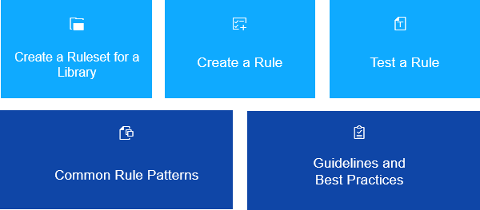

Rule Development Guide
The Support Assistant allows you to create custom rules and rulesets and test them on your apps.
Rules can check different aspects of an app depending on the desired result. Each rule belongs to a specific ruleset. The ruleset is a JavaScript file named library.support.js that defines a set of rules. It consists of all the rules for an OpenUI5 library. Before creating a rule, you first need to create the ruleset. You can only have one ruleset per library.
The next subsections contain more detailed information on how to create new rules and test them. You can also see examples of best practices and common types of rules.
This image is interactive. Hover over each area for a description. Click highlighted areas for more information.
